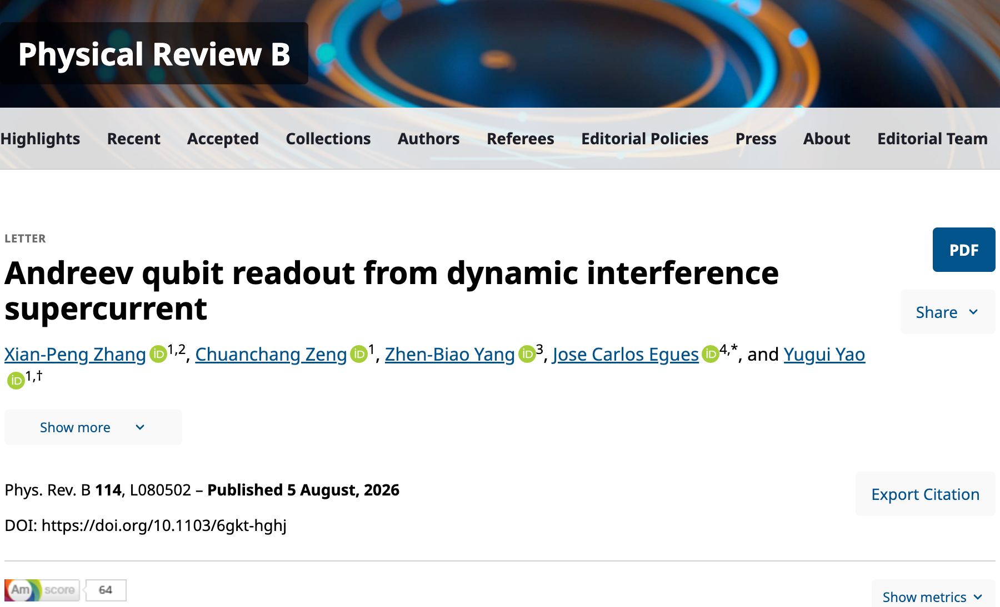
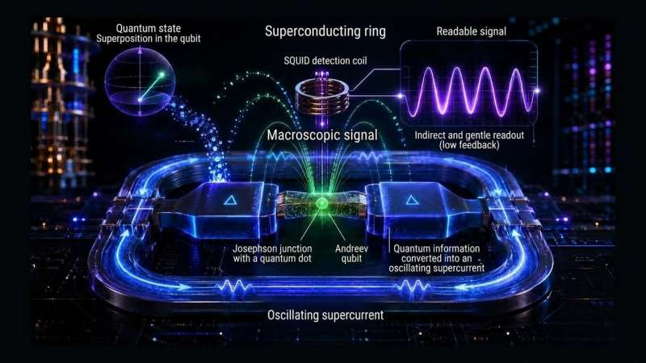
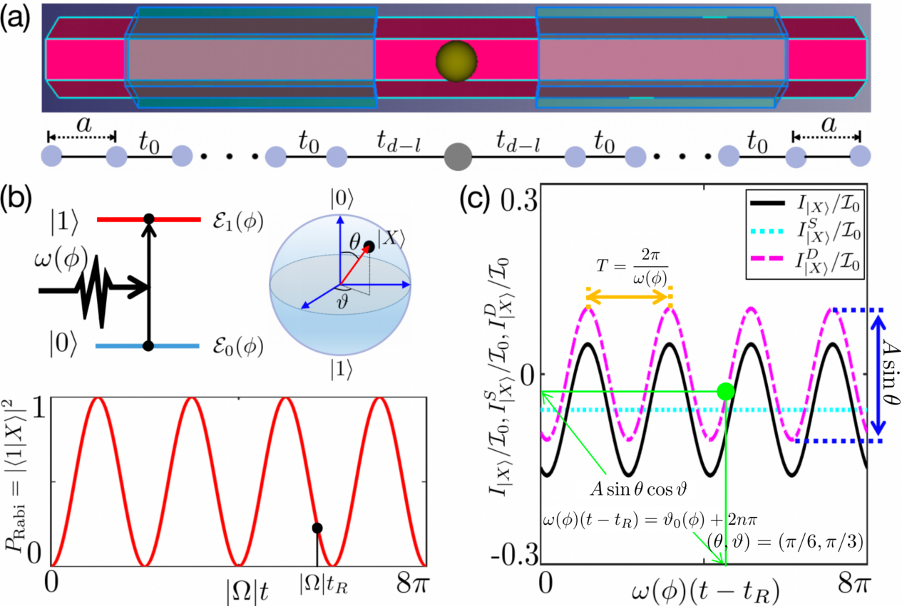

近日，北京理工大学姚裕贵院士、张先鹏研究员与巴西圣保罗大学 Jose Carlos Egues 教授在超导量子测量领域取得重要进展。研究团队提出了一种基于动态干涉超导电流（dynamic interference supercurrent）的 Andreev 量子比特读出新方案，利用量子比特自身的相干演化产生的宏观振荡超导电流，实现对任意量子叠加态的高精度、近无损读出。该方案无需引入辅助量子比特（ancilla），也无需在每次测量后反复重置量子比特，有望显著降低量子测量的实验复杂度，为超导量子计算中的高效量子态测量与量子信息读取提供新的思路。相关研究成果以 "Andreev qubit readout from dynamic interference supercurrent" 为题，发表于国际物理学期刊《Physical Review B》114, L080502 (2026)。北京理工大学为该工作的第一完成单位，张先鹏研究员为论文的第一作者，Jose Carlos Egues 教授和姚裕贵教授为论文的共同通讯作者，曾传昌（北京量子院）和杨贞标（福州大学）也参与了该项研究工作。该工作得到科技部重点研发计划和国家自然科学基金等项目的支持。
量子测量是量子计算与量子信息处理中的核心环节。与经典比特不同，量子比特可以处于多个基态的相干叠加，其量子信息对外界环境及测量过程十分敏感。直接测量通常会引起量子态坍缩，从而改变甚至破坏原有的量子信息。为降低测量对量子态的扰动，研究人员发展了量子非破坏测量（quantum nondemolition measurement, QND）等技术，其中许多方案需要借助辅助量子比特完成信息转移与测量，并涉及辅助比特的制备、耦合、测量及重复重置等步骤。这些操作增加了量子测量的实验开销，也给量子计算系统的扩展带来挑战。因此，如何在尽可能保持量子态完整性的同时，直接、高效地提取量子信息，是量子测量领域亟待解决的重要问题。

Andreev 量子比特是一类基于超导约瑟夫森结中 Andreev 束缚态实现的量子比特。在超导电极与量子点构成的 Josephson 结中，电子和空穴通过 Andreev 反射形成局域的相干束缚态，其多体本征态可用于编码量子信息。研究团队以量子点 Josephson 结中的 Andreev 量子比特为研究对象，建立了基于多体本征态相干干涉的动态超导电流理论。研究发现，当 Andreev 量子比特处于任意量子叠加态时，不同多体本征态之间的量子干涉能够产生随时间振荡的超导电流分量。该动态干涉超导电流不仅反映了量子态的相干演化，而且直接携带量子比特的状态信息，为实现量子态的近无损读取提供了新的物理机制。

进一步，研究团队揭示了动态干涉超导电流所蕴含的量子态信息编码机制。对于单个量子比特，其任意纯态可通过 Bloch 球上的两个参数——基态与激发态的相对权重以及二者之间的相对相位——进行完整描述。研究表明，动态干涉超导电流的稳态分量及振荡幅度能够反映量子态中两个基态的相对权重，而超导电流振荡的初始相位则携带量子态的相对相位信息。因此，通过对超导电流随时间变化的特征进行测量，可以重构 Andreev 量子比特的任意初始叠加态，实现对量子信息的直接读取。
该研究还揭示了一种无需外加电压驱动的类交流 Josephson 效应。传统交流 Josephson 效应通常由外加电压驱动，使超导相位差随时间演化并产生振荡超导电流。而在本研究提出的方案中，振荡超导电流源于 Andreev 量子比特自身的相干量子演化，无需施加外部电压。该现象是微观量子态动力学在宏观电流中的独特体现，建立了 Andreev 量子态相干演化与可观测超导电流之间的直接联系。研究团队将量子比特集成于闭合超导回路中，并提出利用与回路弱耦合的超导量子干涉仪（SQUID）探测超导电流产生的微弱时变磁场，从而提取量子态信息。由于探测器与量子比特之间的耦合较弱，测量反馈引起的量子态扰动可被有效抑制，使读出过程逼近近无损测量极限。
为评估该方案在实际实验条件下的可行性，研究团队进一步开展了数值模拟，综合考虑了测量噪声以及探测线圈引入的反馈扰动。模拟结果表明，随着测量次数的增加，量子态重构精度分别达到 99.52%、99.81% 和 99.85%，显示出该方案在存在实际测量误差的情况下仍具有较高的读出精度。值得强调的是，该方案无需辅助量子比特，也无需在连续测量过程中反复重置原始量子比特，从而有望降低量子态读出的实验开销，并为跟踪量子比特的动态演化提供新的途径。该研究目前为理论与数值模拟工作，相关器件结构及读出方案仍有待实验验证。
该研究提出的动态干涉超导电流读出机制，在基础物理层面揭示了 Andreev 多体量子态相干干涉所产生的宏观超导输运响应，预言了无需外加电压的类交流 Josephson 效应；在量子技术层面，则为不依赖辅助量子比特的高精度量子态读取提供了新的理论方案。该工作将超导输运、量子干涉与量子测量紧密联系起来，为 Andreev 量子比特在量子计算、量子信息处理及量子测量中的潜在应用拓展了新的研究方向。
在此基础上，研究团队进一步拓展了动态干涉超电流的理论框架。最新预印本研究成果以 "Quantum state tomography through multi-frequency Josephson effect" 为题，发表于 arXiv（arXiv:2610.24391）。该研究从多体量子态的相干演化出发，系统揭示了动态干涉超电流在有限动量超导体和量子点 Josephson 结等不同超导纳米体系中的普适性，进一步深化了对宏观超导电流微观起源的认识。研究还发现，由多个 Andreev 自旋量子比特构成的体系能够通过无外加电压驱动的多频 Josephson 效应产生丰富的动态干涉信号，其频率结构与多体本征态的相干演化及超导相位空间 Berry connect 密切相关。基于这一机制，团队提出利用动态干涉超电流实现量子纠缠测量的新方案，为量子态层析（quantum state tomography）及量子纠缠信息的探测提供了新的理论途径。量子纠缠作为量子信息处理、量子计算和量子通信的重要资源，其精确表征对于理解和利用复杂量子态至关重要。上述研究将动态干涉超电流从单量子比特读出进一步拓展至多量子比特纠缠测量，建立了连接超导输运、量子几何与量子信息表征的统一理论框架，为超导量子器件在量子计算、量子通信、量子存储及量子传感等领域的应用提供了新的研究方向。
该成果发表后受到国际学术界及科学媒体的广泛关注与讨论（Altmetric Attention Score: 64）。截至新闻稿撰写时，Phys.org、ScienceDaily、Scitechdaily、Eurekalert、Agência FAPESP、Interesting Engineering、QuantumInsider、Quantum Zeitgeist、ScieNow 和 Miragenews 等国际科学媒体对该研究进行了报道，重点关注其通过量子比特自身产生的超导电流读取量子信息、减少测量扰动并避免辅助量子比特的创新思路。这些报道进一步展现了动态干涉超导电流在量子测量与量子信息技术领域的潜在影响。
Xian-Peng Zhang, Chuanchang Zeng, Zhen-Biao Yang, Jose Carlos Egues, and Yugui Yao, "Andreev qubit readout from dynamic interference supercurrent," Physical Review B 114, L080502 (2026). DOI: 10.1103/6gkt-hghj.
Xian-Peng Zhang, Ting-Rui Hu, Zhen-Biao Yang, Rubén Seoane Souto, and Yugui Yao, "Quantum state tomography through multi-frequency Josephson effect," arXiv preprint arXiv:2610.24391.
供稿：张先鹏